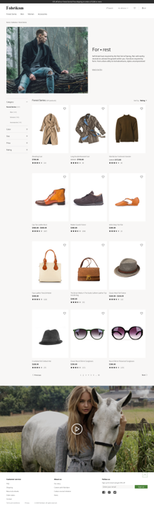

Füllen einer Kategorie-Landingpage
Important
Dynamics 365 Retail ist jetzt Dynamics 365 Commerce und bietet umfassende Handelsfunktionen für alle Kanäle – von E-Commerce über Shops bis hin zu Callcentern. Weitere Informationen zu diesen Änderungen finden Sie unter Microsoft Dynamics 365 Commerce.
In diesem Thema wird die Anreicherung der Kategorieseiten in Dynamics 365 Commerce abgedeckt.
Übersicht
Handel enthält eine Standardkategorieangebotsseite, die verwendet wird, wenn Kategoriedaten angezeigt werden. Eine obligatorische Standardkategorieseite enthält Elemente, wie Verfeinerungen, kategorisierte Produktplatzierung und sortiert Optionen, enthält eine auserlesene Zusammenfassung und Paginierungskontrollen.
Allerdings anstatt die Standardkategorieseite zu verwenden, sollten Sie eine angereicherte Kategorieangebotsseite verwenden, die mehr Inhalt und mehr bestimmte Projekte aufweist. Eine typische Bereicherung ist möglicherweise das Hinzufügen von kategoriespezifischen Marketings-Inhalt der Kategorieseite hinzuzufügen. Dieser Inhalt kann überkreuzte Kategorieproduktplatzierungen enthalten für Cross-Sell-Zwecke, redaktionelle Listen, Bilder, Videos und anderen Text. Sie können entweder die Standardkategorieseite ändern oder eine andere Kategorieseite für eine bestimmte Kategorie definieren.

Im Commerce Site Builder umfasst die Seite Produkte eine Liste der Kategorien vom Kanal, die dem Standort zugeordnet werden. Wenn der Status Angereichert für eine Kategorieseite aktiviert ist, ist diese Kategorieseite angereichert worden. Andernfalls werden die Standardkategorieseite und der Inhalt für die Kategorie verwendet. Sie können in der Vorschau angereicherte und nicht angereicherte Kategorieseiten für eine Kategorie anzeigen, wenn ein Kategoriename in der Liste ausgewählt ist.
Um eine Kategorieseite anzureichern, gehen Sie folgendermaßen vor.
- Auf der Seite Produkte wählen Sie den Namen der Kategorie, für die Sie die Kategorieseite anreichern möchten. Die Standardkategorieseite für die ausgewählte Kategorie ist im Seitenaufbereitungsprogramm geöffnet.
- Wählen Sie Kategorieseite anreichern aus.
- Wählen Sie eine Vorlage für die angereicherte Kategorieseite aus. Wenn Sie nur geringfügige Änderungen vornehmen, können Sie die Standardkategorieseite auswählen. Alternativ können Sie eine bestimmte Kategorieseitenvorlage auswählen. Wenn Sie die Vorlage auswählen, ist das Seitenaufbereitungsprogramm geöffnet, und die ausgewählte Vorlage wird verwendet, um eine neue Kategorieseite für die ausgewählte Kategorie zu erstellen. Die Seite wird von Ihnen ausgecheckt und Sie können nun Ihre Änderungen vornehmen.
Note
Module, die Kategoriespezifikationsdaten verwenden, die Daten aus der ausgewählten Kategorie nutzen. Die Einstellungen der Vorlage, die Sie auswählen, bestimmt die Änderungen, die Sie vornehmen können.
Zusätzliche Ressourcen
Bestehende Seite einer Website ändern